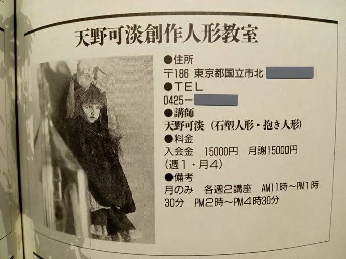

- Katan Walks Quickly -

The interview was published in the magazine Doll Forum Japan Vol.14, which featured a seven-part series centered on a doll maker, Kanta Amano (Shizuka's doll-teacher). Shizuka's interview here is Vol.2.
(click for original page)

(Note: The images used here are all Katans')
A living Katan Doll
（katan’s photo）
What kind of person is katan based on? Does the doll exist in reality? Ms. Shizuka Miura appeared in front of us wearing a lilac lace top and long skirt that Katan had given her. On the street after the rain, she was as excited as a person from another world, and we were confused when we met for the first time. But even more confused and nervous than that was Shizuka herself. Miura Shizuka, together with her husband Maki, now forms an underground band and continues to perform at home and abroad. (Interview by 小川千惠
Text Shizuka: Miura Shizuka, Maki: Miura Maki, D: DFJJ ， text·三浦志保 ，Katan（full name 天野可淡, one of famous doll-makers in Japan，shizuka’s doll-teacher）
part1.Come across
Shizuka : Because of the huge impact that Katan had on me, I was devastated when he passed away and couldn't do anything for a long time... But I received so many beautiful things from him that I couldn't just be sad... I wanted to make something out of it no matter what. My husband (真树,Maki) has been playing guitar all along, while I haven't done anything, but I started composing with a guitar on my own, starting from making an album to tribute Katan-san(which is Heavenly Persona). I have a lot to talk about when it comes to Katan.
D : How did you meet Katan?
Shizuka : At that time, I was writing poetry, but it wasn't taking shape, like being in the dark. I lived in Hino City, and there was a white house near my home with black iron-curved windows and vines crawling all over it. I was curious about the person who lived there... So I made up my mind to visit. That's when I met Katan, who was preparing for an exhibition. We only talked for five minutes. Soon after that, I received an invitation to her personal exhibition, and I went to see it. Then I thought, "Ah, this person is really amazing"... People often say that Katan's dolls are creepy, but I didn't have that impression at all. I understand both darkness and light, gentleness and warmth... Why is this doll so gentle?
Shizuka : Not long after the personal exhibition, Katan-san called me and we talked in the park. At that time, he showed me a photo of this doll (published on page 17 of issue 13) and said, "This doll was created based on you."
“katan doll: Girl Looking Up at the Stars” ,created based on Shizuka
D : So, did we not have this doll when we met?
Shizuka : No. She said: "It was made based on the impact I received from meeting you." Although some people say that I look like Katan's doll, I don't really feel that way. But looking at Katan's works before she met me, there are many similar works.
Maki : The first time I saw Katan's personal exhibition, I was shocked when I saw the doll that looked like shizuka. I think the person who made it would be equally surprised to see shizuka.
This doll, modeled after shizuka, doesn't actually look like her, but reflects her inner world at that time. Having trouble with music and life, and didn't know what to do, that was who she was at that time.
Shizuka : However, regarding publicly acknowledging that I was the model... dolls are things that take us into a world of fantasy, and if you say something so realistic, the world will shrink, and you might feel it's better not to say anything. Perhaps this doll was made as an opportunity based on me, but at the moment of creation, this child took its first steps with its own vitality... Because I wanted this child to grow under the gaze of various people, I don't know how this child is doing now, but I feel that it's okay like this.
part2.Love
D : Miss Shizuka, do you also make dolls?
Shizuka : I'm not that skillful. I went to Katan's doll-making class...

（Information about katan's doll classroom）
Maki : Although I studied it, I was only taught the technical aspects once. Katan asked me to tell Shizuka, and she said, "You graduate after just one time." Katan said Shizuka didn't need to do anything. "Just living there is enough, no need to make dolls, I'll do it."
Shizuka : My encounter with Ms. Katan was very impactful to me, but for Ms. Katan, the fact that through the dolls she created is also a very deep impression. With this as an opportunity, Katan invited me to watch movies or attend exhibitions, and we went together. Ms. Katan seemed to have fallen in love with me. At home, they started saying that Katan's appearance and emote was very strange, and the reason was me...
For me, Ms. Katan is a person with a great sense, taking me to many places and truly teaching me a lot. It should be said that she knew the truth from birth and explained it in a very popular and understandable way. Nevertheless, she never displayed an arrogant attitude and was a person with a lot of charisma. But I decided to marry and have children with him (husband Maki Miura), so afterwards, I started living with him, as if I wanted to escape from Katan, and moved to the American military housing in Akashima. Ms.Katan was very distressed about this. Later, after she divorce, Katan moved to a greenhouse two stops away from my house.
D ：Is 吉田良一（Katan's ex-husband is also a very prominent doll maker,He also uses 吉田良 as name） coming too?
Shizuka ：No, at first it was just me and the two children living together. Before long, 吉田良一 also lived with us.
D ：I often heard Ms. Katan say that she was not only an artist, but also a very serious mother and wife who made bento and cooked meals...
Maki ：She really did that very well.
Shizuka ：Yes, but it seems like it was very painful.
Maki ：The matter of Shizuka still lingers in my heart, wanting to separate with her, but unable to... But with the changes in life, we gradually drifted apart. It feels good that Katan becoming our wife.
part3.The energy of genius
（Katan）
D : Ms. Katan is often referred to as a genius, but what is her energy like?
Shizuka : She is an amazing person. Really... That creative energy surpasses that of women. She is also very charismatic in personality and I have never heard anyone speak ill of her. People around her always say, "Katan, Katan!" She is really gentle, powerful, and a very handsome person. Like Patti Smith, she has a certain androgynous quality about her.
D : Does she have leadership charisma?
Shizuka : I don't think she's an ordinary person. She has a great ability to see the essence of things. She is really passionate, has made so many dolls, and even learned flamenco. In short, she is a very energetic person.
D : She seems very healthy.
Maki : Healthy! She is very healthy. She is even stronger than the average man. She rides motorcycles and jeeps everywhere. But she also takes good care of her children.
D : What kind of person is she in appearance?
Shizuka : This (a photo of Ms. Katan sitting sideways on a stone step wearing a vest with jeans, cowboy boots, and flat shoes) is what Ms. Kedan gave me.
Maki : She has a very cool older sister vibe. Although she is a little younger than me, she looks pretty big because she is tall.
Shizuka : She can also be very strict. When discussing things, if I repeat the same thing, she will say "I only say it once" and won't say it again. And this answer is not wrong "She has a very cool older sister vibe".
part4.Apraksa
D ：Let me open the words of Katan and the stories that stay in your heart.
Shizuka ： I recommended Hermann Hesse's "Demian" to Katan, and she found it very interesting. It talks about the Abraxas god, which combines both god and demon. Kedan often says, "You cannot only believe in God, nor can you only believe in the demon. God and the demon are one." "If you only see God, then you only see half. To understand God, you must also understand the demon." Also, in Gaudi's work, there is a pillar that looks like tree roots, and she said, "Truth is from the earth to the sky."
D： These words are often spoken casually in our interviews conversations. What did you see at the exhibition?
Shizuka： She take me to a mask exhibition. Although the masks have no expression, if you look closely, they will show emotions and leave a deep impression. We also attended Lovecraft's lecture and watched a film about Gaudi. We also went to see a personal exhibition of other puppet artists who are not students and gave them some advice.
D : This is quite unusual in general. Only the strong can achieve this.
Shizuka : However, at a gathering of other puppet artists, she also said things like "Because I am seen as a heretic, no one joins in."
D ： Does she seem lonely?
Shizuka ： Hmm. But I think it's okay to be afraid. She should be more confident. Because I believe she is definitely someone who is going towards the world.
part5.The Mirror of Offie
She and Katan experienced many inexplicable events, both before and after her passing.
Just when Shizuka and Maki were in dire straits due to running out of living expenses, Katan coincidentally made a call, thankfully having withdrawn extra money from the bank that day. Two days before this accident, Katan learned from Shizuka's call that their lives had settled down, and she felt relieved from the bottom of her heart. During the time of the accident, Maki's boot heel suddenly broke...
Maki : Have you seen his last work?
D : Do you have it at home?
Shizuka : Well, the back of the roof part is a mirror. Jean Cocteau has a film called "Orpheus," set in the underworld through a mirror. When asked for movie recommendations, I recommended "Orpheus". In this work, the spiral staircase faces a mirror.
Shizuka : Going through the mirror is going to another world... His last work was also facing a mirror, so we were all surprised...
Part6.The Enchanting Beauty
The mysterious atmosphere created by Miss Shizuka is indeed like a faint puppet world. However, fantasies cannot exist in reality, and even if they do, they may be taboo in this world. Nevertheless, Katan, who knew of Miss Shizuka's "existence," continued to passionately pursue her. Although Miss Shizuka felt confused, considering Katan's wholehearted dedication to performance and production, everything was natural. That kind of love has surely transcended the petty human understanding of man or woman, reality or unreality.
(小川)